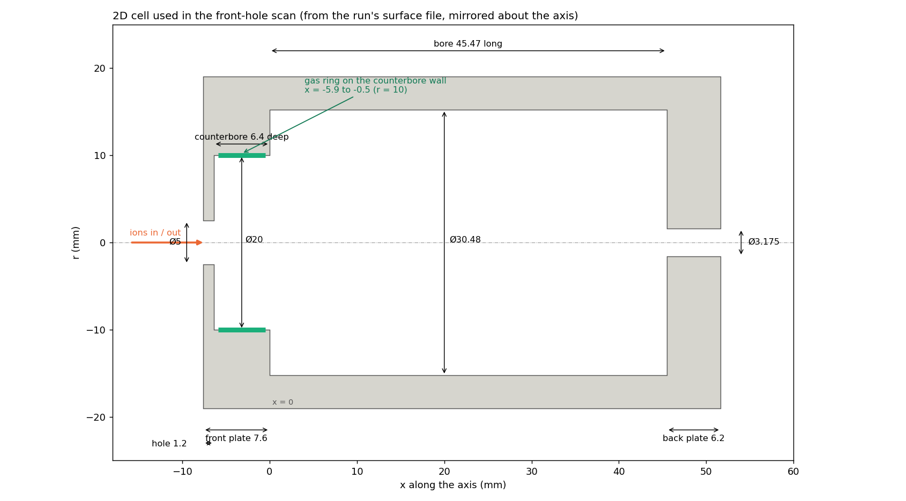

Drawn from the surface file the 2D scan runs used (20–50 SCCM, all the same cell) (mirrored about the axis). All sizes in mm; x = 0 is the inner face of the front plate. Ions and gas both come in on the front (left) side: the gas enters through a ring around the wall of the counterbore (2D stands in for the one-sided fill line); ions should leave again through the Ø5 front hole.

| Part | Size (mm) |
|---|---|
| Front plate | 7.6 thick (x = −7.6 to 0) |
| Ø5.0 front hole | outer 1.2 of the plate (x = −7.6 to −6.4) |
| Ø20.0 counterbore | 6.4 deep, on the cell side (x = −6.4 to 0) |
| Main bore | Ø30.48, 45.47 long |
| Gas ring (green) | on the Ø20 counterbore wall, x = −5.9 to −0.5 (5.4 long) |
| Ø3.175 back hole | 6.2 long (x = 45.47 to 51.67) |
| Outer radius | 19.05 |